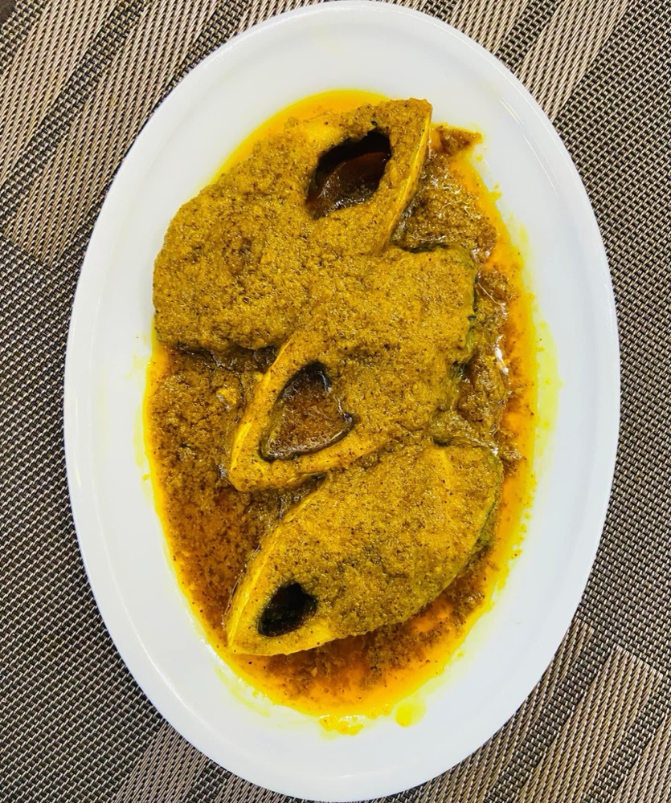

A rice and fish delta cuisine with a sweet tooth precise enough to be its own art form.
A cuisine built by a river delta
Bengal sits on the Ganges-Brahmaputra delta, silt-fed and flooded for months of the year, and its food reflects that directly. Rice is the staple, and freshwater and river fish (hilsa/ilish above all) are the main protein. Mustard grows across Bengal's fields and supplies both the seeds for pungent mustard-paste sauces and the oil that Bengali cooking is built on. That oil defines the cuisine as much as any spice does, and it goes into the fish, the vegetables and the dal alike.
A meal with a structure
A traditional Bengali meal arrives in courses, and the order is fixed. It starts with something bitter (shukto, a mixed-vegetable dish) to wake up the palate, then rice and dal, then a vegetable dish, then fish or meat curry, then chutney, and finally something sweet. That's closer to a French tasting menu than to the single-plate thali found across most of the rest of India. The rice and dal do not share the plate with the fish curry; they precede it.
Where most of India treats sweets as dessert, Bengal treats them as a technical discipline in their own right.
The invention of rosogolla
Bengali sweets stand apart because of one technique. Cooks curdle milk into chhena (fresh cheese) and shape it into desserts. Most of the rest of the country builds its sweets from reduced milk (khoya) or from dough. The most famous result, rosogolla (spongy chhena balls in sugar syrup), is credited to Kolkata confectioner Nobin Chandra Das around 18681. Some food historians trace the cheese-curdling method back further, to Portuguese traders and missionaries who brought cheese-making to Bengal centuries earlier. That makes rosogolla a 19th-century Bengali invention built on a much older imported technique. Sandesh, a firmer chhena sweet often flavored with jaggery, developed alongside it as the other pillar of Bengali confectionery.
Calcutta and colonial-era influence
As the capital of British India until 19112, Calcutta had more direct contact with European cooking than most Indian cities of its time. Anglo-Indian dishes, Western-style cutlets and chops, and a citywide restaurant and confectionery culture all grew out of this period. They layered onto the older rice-fish-mustard base of home cooking.
Sources
Usually credited to Nobin Chandra Das in 1868, though earlier claims exist. Rasgulla↑
Rosogolla (rasgulla): spongy chhena balls in sugar syrup, traced to 1860s Kolkata. Though Odisha disputes the claim and holds its own GI for the temple rasagola.

Shorshe ilish: hilsa fish cooked in a pungent mustard-seed paste.
Signature dishes
Machher jhol: a light, everyday fish curry. Recipe →
Shorshe ilish: hilsa fish in mustard sauce, arguably Bengal's most iconic dish. Recipe →
 Begun Bhaja
Begun Bhaja
 Chitol Macher Muitha
Chitol Macher Muitha
 Muri Ghonto
Muri Ghonto
 Patishapta
Patishapta
 Peyaji
Peyaji
 Radhaballavi
Rasgulla
Radhaballavi
Rasgulla